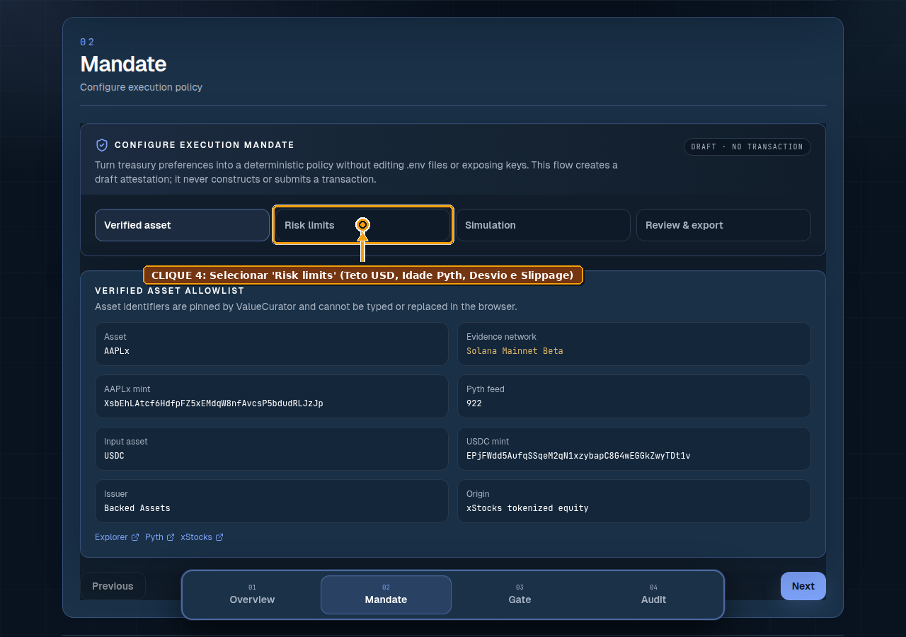
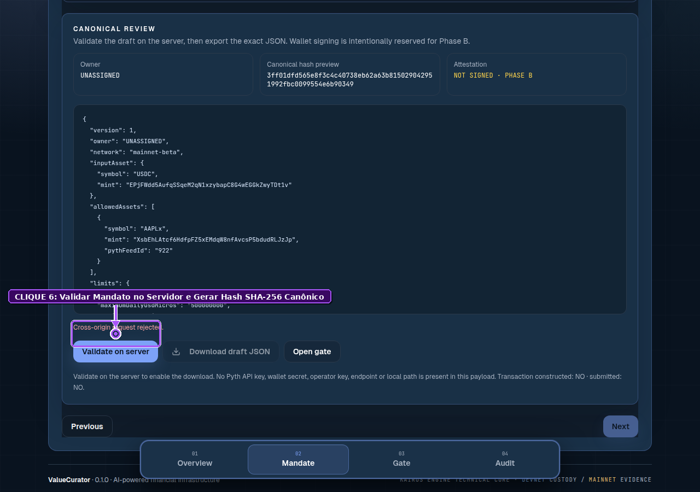
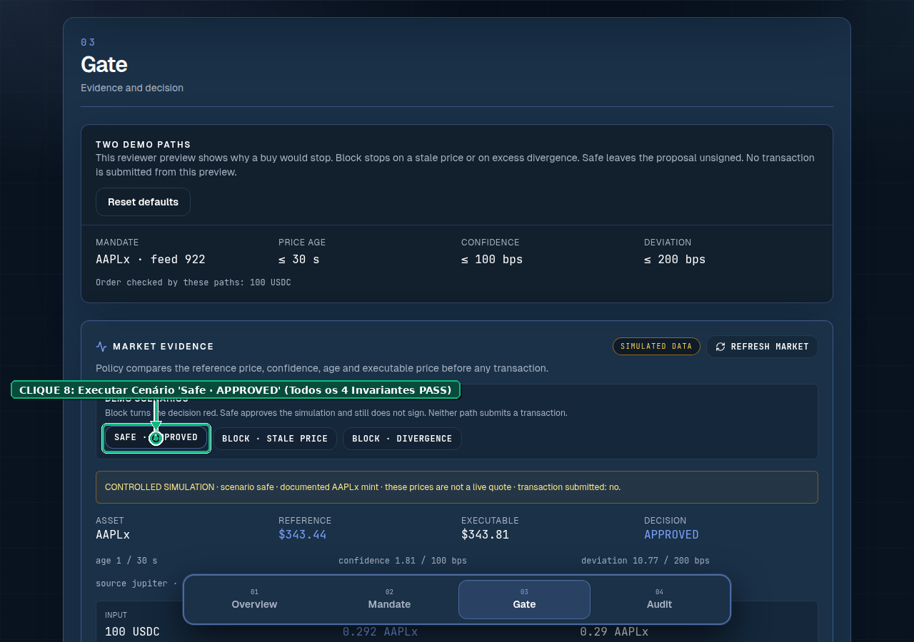
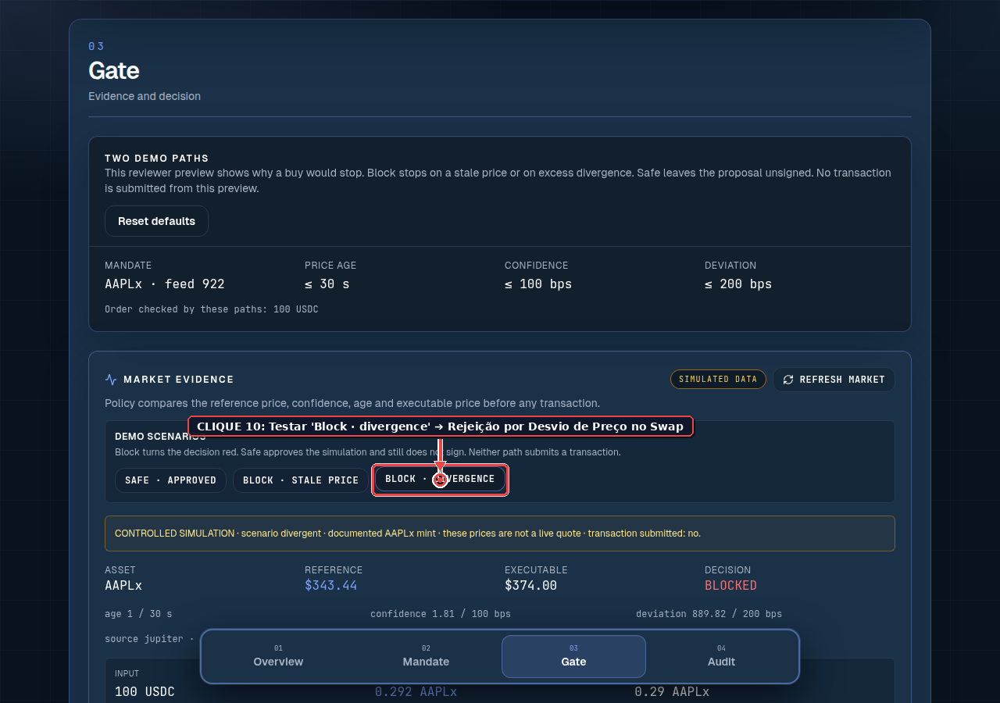
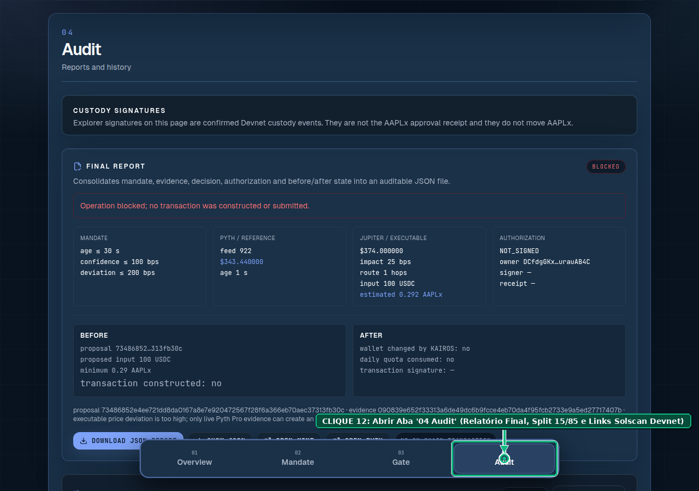

🎴 Pitch Deck Oficial (Sub-Projeto): ValueCurator Devnet E2E — Protocolo de Finanças Computacionais Programáticas, Emissão Soberana Token-2022 & Liquidação Determinística de Swaps
Sub-Projeto: ValueCurator Devnet E2E Engine & Sovereign Artifact Foundry (
feat/devnet-e2e-tokenization-protocol)
Produto Base: ValueCurator / KAIROS Engine (6owAcXj4FxJom96cEX9CSFjGrg6zp4U8atTjrpCUMiW5)
Trilhas Alvo: ICM Lab Solana (Darwin Startups) · Colosseum Accelerator · Autonomous AI & DeSci / RWA Infrastructure
Equipe Fundadora: Sandra Pereira (Mestre em Informática, PUC Minas) & João Nitzsche (Engenharia de Computação, ITA)
Formato: Pitch Deck Executivo em 12 Slides com Resumo ELI5, Equações LaTeX, Diagramas Mermaid Coloridos, Evidências Visuais Anotadas (Playwright 12/12) e Script de Fala (Pitcher Script) para cada slide.
🗺️ Índice Executivo dos 12 Slides do Pitch Deck
- 🎴 Slide 01 — Capa & Tese Central: De "Apenas Aprovação" para "Execução e Emissão Ponta-a-Ponta na Blockchain"
- 🎴 Slide 02 — O Problema (O Gargalo "Split-Cluster"): Por que Agentes de IA Travam entre a Leitura na Mainnet e o Cofre na Devnet?
- 🎴 Slide 03 — A Virada de Chave (Ativos Exógenos vs. Endógenos): Comprar Ações de Terceiros vs. Tokenizar Seus Próprios Artefatos de Pesquisa
- 🎴 Slide 04 — A Solução Arquitetural Dual-Mode: O Motor Unificado
APPROVAL_ONLY+DEVNET_E2Eno KAIROS Engine - 🎴 Slide 05 — A Fábrica Soberana (
mint_research_asset+ Token-2022): Transformando Pesquisa e IA em AtivosMACHINE_PAYABLE(EidosManifest v1.0) - 🎴 Slide 06 — A Matemática do Swap Protegido (
execute_devnet_strategy_swap): Como Liquidar Swaps na Devnet Sem Depender do Jupiter e Sem Risco de Slippage - 🎴 Slide 07 — O Sistema Circulatório (
Treasury PDA&metabolize_yield): O Ciclo Autoregenerativo "Work $\to$ Asset $\to$ Capital $\to$ More Work" (Split 15/85) - 🎴 Slide 08 — O Protocolo Experimental (Owner vs. Cliente Testador): Desenho de Bancada em Finanças Computacionais Programáticas com Phantom & Solscan
- 🎴 Slide 09 — Prova Visual Parte 1 (Mandato & Governança Soberana): Validação Automatizada Playwright (
EXP-01aEXP-06) com Cliques Anotados - 🎴 Slide 10 — Prova Visual Parte 2 (Portão Determinístico, Swap & Auditoria): Cortes Fail-Closed e Auditoria On-Chain (
EXP-07aEXP-12— 100% Pass Rate) - 🎴 Slide 11 — O Que Mudou no Código (Rust + Agente TS + Next.js): Raio-X de Engenharia da Branch
feat/devnet-e2e-tokenization-protocol - 🎴 Slide 12 — Modelo de Negócios B2X, Roadmap & The Ask: De Bancada Experimental a Infraestrutura Padrão para Agentes e Criadores na Solana
🎴 Slide 01 — Capa & Tese Central: De "Apenas Aprovação" para "Execução e Emissão Ponta-a-Ponta"
🎯 Proposta de Valor em 1 Frase
"O sub-projeto
Devnet E2E & Tokenization Protocoltransforma o ValueCurator de um portão estático de leitura para um motor financeiro programático completo: capaz de cunhar artefatos próprios no padrão SPL Token-2022 e liquidar swaps determinísticos 100% on-chain na Solana Devnet sob governança estrita de duas carteiras (Owner vs. Operador)."
🧸 ELI5 (Explicando como se você tivesse 5 anos)
- Antes: Nosso robô olhava o preço da figurinha na vitrine do Shopping (Mainnet), imprimia um vale de papel (
APPROVAL_ONLY) e parava ali. - Agora (Neste Sub-Projeto): Nós demos ao Cofre do Dono (Node PDA) duas super-habilidades reais no Parquinho (Solana Devnet):
- 🖨️ Uma Impressora Oficial de Tokens (
mint_research_asset) para transformar pesquisas, códigos e modelos em tokens Token-2022 visíveis na carteira Phantom! - 💱 Uma Câmara de Câmbio Protegida (
execute_devnet_strategy_swap) para trocar moedas de verdade na blockchain só quando o preço obedece à regra matemática do dono!
- 🖨️ Uma Impressora Oficial de Tokens (
📊 Métricas de Impacto Imediato da Branch
| Indicador Técnico do Sub-Projeto | Status Verificado na Branch | Evidência Auditável |
|---|---|---|
Novas Instruções Rust (kairos_engine) |
✅ 2 Novas Instruções sBPF | mint_research_asset + execute_devnet_strategy_swap |
| Padrão de Tokenização Nativo | ✅ SPL Token-2022 (234 bytes) |
ExtensionType.MetadataPointer + TransferHook |
| Bateria E2E Playwright Anotada | ✅ 12 / 12 Passos Aprovados (100%) | playwright_protocol_e2e_report.json (26,38s) |
| Custo de Execução em Bancada | ✅ $0,00 USD (100% On-Chain Devnet) | Inspecionável via Phantom Wallet & Solscan Devnet |
🎙️ Script de Apresentação (Pitcher Script — 0:00 a 0:30)
"Olá a todos. Na versão base do ValueCurator, nós provamos que a IA pode aconselhar sem nunca tocar nas chaves privadas, parando em um recibo de aprovação porque a liquidez de ações tokenizadas como AAPLx vive na Mainnet enquanto nosso cofre roda na Devnet. Mas como evoluímos isso para testar finanças computacionais programáticas de ponta a ponta e governar também os ativos intelectuais que nós mesmos criamos? Apresentamos o sub-projeto ValueCurator Devnet E2E: a extensão que adiciona emissão soberana de artefatos Token-2022 e liquidação determinística de swaps 100% na Solana Devnet."
🎴 Slide 02 — O Problema: O Gargalo "Split-Cluster" e a Limitação de Ativo Único
🚨 Os 3 Obstáculos que Este Sub-Projeto Resolve
- 🛑 O Abismo entre Clusters (
Mainnet Readvs.Devnet Custody):- Na arquitetura original do Stocklana, o agente lia Pyth e Jupiter na Mainnet, mas o contrato
6owAcX...MiW5residia na Devnet. - Como o Jupiter v6 (
JUP6Lkb...) não possui piscinas de liquidez para RWAs na Devnet, o fluxo travava emtransactionSubmitted: false(APPROVAL_ONLY).
- Na arquitetura original do Stocklana, o agente lia Pyth e Jupiter na Mainnet, mas o contrato
- 🔒 Acoplamento Rígido a um Único Ativo de Terceiros (
AAPLx):- O verificador de mercado exigia um ativo emitido por terceiros (Backed Finance) com KYC bancário na Suíça, impedindo que pesquisadores, DAOs e desenvolvedores usassem o mesmo cofre para governar e tokenizar seus próprios ativos.
- 🧩 Falta de um Protocolo Experimental Reprodutível para Avaliadores:
- Investidores e bancas técnicas (como Darwin ICM Lab e Colosseum) precisam conseguir conectar duas carteiras na Phantom Wallet (Owner e Cliente Testador), clicar passo a passo na tela e ver o saldo mudar no Solscan Devnet.
(Pyth + Jupiter AAPLx)"]:::old --> G1["📋 Recibo Off-Chain
(APPROVAL_ONLY)"]:::old G1 -.-> B1["🛑 TRAVA: Sem Pool Jupiter na Devnet
transactionSubmitted: false"]:::blocker end subgraph AGORA ["🚀 SUB-PROJETO DEVNET E2E (BRANCH EXPERIMENTAL)"] M2["🔮 Oráculo Pyth Live +
📜 Manifesto SHA-256"]:::new --> G2["🛡️ Portão ProofGate
Modo: DEVNET_E2E"]:::new G2 --> S2["⚡ Execução On-Chain Devnet!
• mint_research_asset (Token-2022)
• execute_devnet_strategy_swap"]:::new end
🎙️ Script de Apresentação (Pitcher Script — 0:30 a 1:00)
"Por que criamos este sub-projeto? Porque identificamos três dores claras nos testes de bancada: primeiro, o Jupiter não roteia ações tokenizadas na Devnet, o que obrigava nossa demonstração a parar antes de enviar a transação de swap. Segundo, não queremos que o ValueCurator governe apenas ações da Apple; queremos governar qualquer ativo, inclusive tokenizar os nossos próprios artefatos de pesquisa e software. Terceiro, precisávamos de um protocolo experimental onde qualquer avaliador pudesse operar com duas carteiras Phantom e auditar tudo no Solscan."
🎴 Slide 03 — A Virada de Chave: Ativos Exógenos (De Terceiros) vs. Ativos Endógenos (Gerados por Você)
🧭 A Descoberta Arquitetural que Muda o Jogo
Quando perguntamos "Qual é a melhor forma de rodar ponta-a-ponta na Devnet?", a resposta depende de quem emite o ativo:
| Dimensão Estratégica | 📈 Ramo 1: Ativos Exógenos (De Terceiros) | 🧬 Ramo 2: Ativos Endógenos (Gerados por Nós) |
|---|---|---|
| Exemplos de Ativos | Ações (AAPLx, TSLAx), Ouro, Títulos Públicos, SOL |
Research NFTs (R-NFT-ONS-001), Modelos de IA, Glyphs, Licenças B2Agent, Royalties de P&D |
Quem é o Emissor (Mint Authority)? |
Instituição externa na Mainnet (ex: Backed Finance / Circle) | O Próprio Node PDA do ValueCurator ([b"node", owner])! |
| Como resolver na Devnet? | Swap Determinístico contra Reserva (execute_devnet_strategy_swap) validado por enforce_reference_price |
Cunhagem Direta SPL Token-2022 (mint_research_asset) assinada via CPI pelo Node PDA |
| Equivalência Devnet $\leftrightarrow$ Mainnet | Na Mainnet aponta para o Jupiter CPI; na Devnet usa a Reserva do Cofre | 100% Idêntica na Devnet e na Mainnet! Não depende de corretora externa nem de piscinas de terceiros! |
🧸 ELI5
- Para ativos dos outros (como ações da Apple), nosso cofre funciona como um Comprador Prudente que confere o preço no oráculo antes de trocar moedas.
- Para ativos que você mesmo cria (suas pesquisas e softwares), nosso cofre funciona como a Casa da Moeda Oficial, que só imprime o token quando a qualidade e a autoria foram provadas!
🎙️ Script de Apresentação (Pitcher Script — 1:00 a 1:30)
"A grande sacada deste sub-projeto foi separar ativos exógenos — criados por terceiros, como AAPLx — de ativos endógenos, que nós mesmos geramos como pesquisadores e construtores. Quando o ativo é nosso, não precisamos simular nada nem depender de liquidez externa: o próprio Node PDA do ValueCurator atua como a Mint Authority exclusiva no padrão SPL Token-2022, tanto na Devnet quanto na Mainnet!"
🎴 Slide 04 — A Solução Arquitetural Dual-Mode: APPROVAL_ONLY $\oplus$ DEVNET_E2E
🎛️ O Operador de Comutação Topológica
Definimos o espaço de operação do ValueCurator com suporte nativo aos dois modos sem quebrar nenhuma garantia de segurança existente:
(Limites de Idade, Confiança, Desvio e Volume)"]:::owner PROP["🤖 Agente Coleta Evidência (Pyth / Manifesto)
e Calcula Proposta Imutável SHA-256"]:::gate SIGN["✍️ Owner Assina Autorização Ed25519
na Carteira Phantom"]:::owner MAND --> PROP --> SIGN --> SWITCH{"🎛️ Seletor de Modo
(UI Toggle / CLI Flag)"}:::gate SWITCH -->|"Modo Padrão: APPROVAL_ONLY
(Mainnet Read / Stocklana)"| M_APP["📜 Recibo Criptográfico Off-Chain
transactionSubmitted: false
Prova pura de autorização sem gasto de gás"]:::mode1 SWITCH -->|"Novo Modo: DEVNET_E2E
(Sub-Projeto Experimental)"| M_DEV["⚡ Liquidação On-Chain na Solana Devnet
1. post_reference_price (Owner)
2. mint_research_asset (Token-2022)
3. execute_devnet_strategy_swap (Operator)
4. metabolize_yield (Split 15/85)"]:::mode2
🎙️ Script de Apresentação (Pitcher Script — 1:30 a 2:00)
"Para preservar 100% da integridade da versão de produção e ao mesmo tempo destravar a execução completa na Devnet, implementamos uma arquitetura Dual-Mode. Pelo seletor visual na aba Gate ou via flag na CLI do agente, o usuário alterna entre o modo clássico Approval-Only e o novo modo Devnet E2E, que leva o recibo Ed25519 assinado pelo Owner diretamente até a liquidação no bloco da Solana Devnet."
🎴 Slide 05 — A Fábrica Soberana (mint_research_asset + SPL Token-2022)
📜 Do Manifesto Epistêmico (EidosManifest v1.0) ao Token-2022 na Phantom Wallet
Neste sub-projeto, introduzimos o protocolo formal para transformar qualquer unidade de propriedade intelectual ou pesquisa científica em um Executable Semantic Asset (ESA) governado pelo ValueCurator:
- Schema Canônico (
ResearchNFTManifest.schema.json):- Identifica o ativo por
eidos_id(eidos-ons-2026-0001-a8f9), símbolo (R-NFT-ONS-001), estágio de maturidade (IDEA$\to$VALIDATED$\to$OPERATIONAL), genealogia (parent_cids,source_commits) e perfil de direitos para agentes de IA (ai_agent_access: "MACHINE_PAYABLE",royalty_bps: 250).
- Identifica o ativo por
- Conta Mint Token-2022 de
234 bytes(mint-research-nft.ts):- Utiliza a extensão nativa
ExtensionType.MetadataPointerda Solana. - Inicializa
createInitializeMetadataPointerInstructionantes decreateInitializeMintInstruction, cravandoMintAuthority = Vault Node PDA(4eB8jpCUYYeqLkG4PgtqiDC5vvtcN2bMoZYsDqyBe1BS).
- Utiliza a extensão nativa
- Emissão Governada via CPI (
mint_research_asset.rs):- Somente quando o
operatorautorizado apresenta um manifesto válido ao contrato Rust, oNode PDAassina com suas seeds criptográficas (invoke_signed) a chamadatoken_2022::mint_toe emite o evento auditávelResearchAssetMintedEventno bloco!
- Somente quando o
🎙️ Script de Apresentação (Pitcher Script — 2:00 a 2:30)
"Vejam como funciona a nossa fábrica soberana de ativos: primeiro empacotamos o artefato de pesquisa em um manifesto JSON Schema que define seus direitos de acesso por máquinas — como 2,5% de royalties em modo Machine-Payable. Em seguida, criamos um Mint SPL Token-2022 com extensão MetadataPointer onde a única autoridade capaz de cunhar novas unidades é o próprio Node PDA do cofre. Quando a política aprova, a instrução Rust mint_research_asset assina via CPI e entrega o token direto na carteira Phantom do destinatário."
🎴 Slide 06 — A Matemática do Swap Protegido (execute_devnet_strategy_swap)
📐 Como Garantimos Derrapagem Controlada e Zero Dependência de Pools Externas na Devnet
Antes de movimentar um único micro-centavo no swap, o módulo math.rs do contrato executa a verificação determinística em inteiros de 128 bits (u128):
🎙️ Script de Apresentação (Pitcher Script — 2:30 a 3:00)
"E como resolvemos o swap na Devnet sem depender do Jupiter? Criamos a instrução execute_devnet_strategy_swap. Ela passa exatamente pelo mesmo guarda-costas matemático em Rust — a função enforce_reference_price — que calcula o pior preço implícito em aritmética de 128 bits e o compara com o preço de referência publicado pelo Owner. Se desviar mais que 2%, a transação reverte com PriceDeviationExceeded. Se passar, ela transfere o colateral para a reserva e cunha o ativo estratégico Token-2022 atomicamente na conta de saída."
🎴 Slide 07 — O Sistema Circulatório: Treasury PDA & metabolize_yield (Split 15/85)
🩸 Por que a Tesouraria é o Coração Autoregenerativo do Ecossistema?
- A Regra de Ouro do
metabolize_yield:- A instrução
metabolize_yieldnunca toca no capital principal guardado no cofre; ela processa exclusivamente os rendimentos (yields) e royalties recebidos pela operação! - O capital principal permanece $100\%$ protegido e resgatável em $\sim 400\text{ ms}$ exclusivamente pela carteira do Owner via
emergency_withdraw.
- A instrução
- A Partilha Constitucional Automática (
15% / 85%):- 85% (
Reinvested Vault): Vai direto para o cofre soberano do criador/investidor (Node PDA), aumentando seu patrimônio líquido. - 15% (
Treasury PDA — Research Stream): Alimenta o sistema circulatório do projeto — custeando infraestrutura de nós (oráculos, RPCs), reserva de amortecimento e financiamento de novos ciclos de pesquisa ("Work $\to$ Asset $\to$ Capital $\to$ More Work").
- 85% (
Royalties B2Agent (250 bps)"]:::yield --> MET["⚙️ metabolize_yield
(split_yield em math.rs)"]:::split MET -->|"85% Líquido"| V["🔒 Node PDA Vault (Owner)
Patrimônio Soberano Protegido
(emergency_withdraw em 400ms)"]:::vault MET -->|"15% Taxa Metabólica"| T["🏛️ Treasury PDA (Research Stream)
• Financia Novos Research NFTs
• Paga Infraestrutura RPC/Pyth
• Grants & Governança DAO"]:::treas T -.->|"Work → Asset → Capital → More Work"| IN
🎙️ Script de Apresentação (Pitcher Script — 3:00 a 3:30)
"Quando outros agentes de IA pagam royalties para consumir nossos Research NFTs ou quando uma estratégia gera lucro, entra em ação a instrução metabolize_yield. Ela nunca toca no montante principal do usuário: ela opera apenas sobre os rendimentos, enviando 85% para o cofre soberano do dono e 15% para a Tesouraria, que financia novos ciclos de pesquisa e infraestrutura num loop econômico autoregenerativo."
🎴 Slide 08 — O Protocolo Experimental: Carteira Owner vs. Carteira Cliente Testador
🧑🔬 Desenho Experimental Reprodutível com Phantom Wallet & Solscan
Para comprovar cientificamente a separação de poderes (Sovereignty vs. Operational Agency), estruturamos o protocolo experimental com dois atores operando na Phantom Wallet (Solana Devnet):
| Ator Experimental | Chave / Papel On-Chain | Ações Permitidas no Experimento | O Que Acontece se Tentar Abusar? |
|---|---|---|---|
| 👑 Carteira 1: Owner (Governança) | node.owner (48x8TR...aDUq) |
• Inicializar o Nó (initialize_node)• Configurar o Mandato ( 02 Mandate)• Publicar Preço Base ( post_reference_price)• Assinar Aprovação ( Sign approval Ed25519)• Saque de Emergência ( emergency_withdraw) |
Não pode ser a mesma chave do operator (InvalidOperator no initialize_node!). |
| 🧑🔬 Carteira 2: Cliente Testador (Operador) | node.operator (Hot Key Revogável) |
• Rodar Simulações no Gate (03 Gate)• Disparar metabolize_yield (15/85)• Disparar assert_executable_price / execute_devnet_strategy_swap• Disparar mint_research_asset |
• Se outra carteira tentar operar: bloqueio on-chain UnauthorizedOperator.• Se propor preço fora de $2\%$: bloqueio on-chain PriceDeviationExceeded.• Nunca consegue sacar do cofre! |
🎙️ Script de Apresentação (Pitcher Script — 3:30 a 4:00)
"Nosso protocolo experimental coloca duas carteiras Phantom frente a frente na Devnet: a carteira do Owner, que detém a soberania do capital e define os limites constitucionais, e a carteira do Cliente Testador, que atua como operador quente. Mesmo que a chave do operador seja comprometida ou controlada por uma IA alucinada, ela é matematicamente incapaz de sacar fundos ou executar um swap fora da banda de 2% definida pelo Owner."
🎴 Slide 09 — Prova Visual Parte 1: Mandato & Governança Soberana (EXP-01 a EXP-06)
📸 Evidências Automatizadas Playwright com Indicação Visual de Clique (1280x900)
Nossa suíte automatizada (run_experimental_protocol_playwright.py) executou e anotou visualmente cada clique da jornada do Owner e do Cliente Testador:
| Etapa | Printscreen Anotado & Alvo de Clique | O Que Foi Provado na Execução |
|---|---|---|
EXP-01 & EXP-02 |
 |
Conexão Phantom & Estado Devnet: O painel identifica o cluster api.devnet.solana.com, expõe o seletor da Phantom Wallet e exibe os links diretos para o ReferencePrice PDA e Node PDA no Explorer. |
EXP-04 |
 |
Parametrização Constitucional (Risk limits): O Owner define limites legíveis por humanos (100 USDC/trade, 500 USDC/dia, idade máxima 30s, desvio máximo 200 bps), convertidos automaticamente para inteiros micros e bps. |
EXP-06 |
 |
Validação Server-Side & Hash SHA-256 (Review & export): Ao clicar em Validate on server, o backend valida o contrato e gera o digest criptográfico imutável do mandato (Server validated). |
🎙️ Script de Apresentação (Pitcher Script — 4:00 a 4:30)
"Nestas capturas reais geradas pela nossa suíte Playwright, vemos as primeiras seis etapas do protocolo: o Owner conecta sua Phantom Wallet na Devnet, inspeciona os PDAs no Explorer, entra no Mandate Builder, ajusta os sliders de risco para 30 segundos de idade máxima e 200 basis points de desvio, e sela o mandato no servidor gerando um hash SHA-256 imutável."
🎴 Slide 10 — Prova Visual Parte 2: Portão Determinístico, Swap & Auditoria Solscan (EXP-07 a EXP-12)
🛡️ Testando a Aprovação Nominal e os Cortes Fail-Closed em Tempo Real (12/12 PASSED)
| Etapa | Printscreen Anotado & Alvo de Clique | Resultado Experimental Verificado |
|---|---|---|
EXP-08 (Nominal) |
 |
Cenário 1 (Safe · APPROVED): Quando a idade do Pyth ($\le 30\text{s}$), confiança ($\le 100\text{ bps}$) e desvio do swap ($\le 200\text{ bps}$) passam, todos os 4 invariantes exibem PASS e a proposta fica pronta para assinatura Ed25519 e liquidação DEVNET_E2E. |
EXP-09 & EXP-10 (Adversarial) |
 |
Cenários 2 e 3 (Block · stale & Block · divergence): Quando o oráculo atrasa ou o preço do swap desvia mais de $2\%$, o portão corta a execução instantaneamente em modo Fail-Closed (BLOCKED), espelhando a reversão on-chain PriceDeviationExceeded! |
EXP-12 (Auditoria Solscan) |
 |
Auditoria Completa (04 Audit): Exibe o relatório consolidado Before / After, a divisão metabólica 15% Treasury / 85% Vault e as 5 assinaturas de transações confirmadas na Solana Devnet inspecionáveis em 1 clique! |
🎙️ Script de Apresentação (Pitcher Script — 4:30 a 5:00)
"Na segunda metade do protocolo, o Cliente Testador coloca o Portão à prova na aba Gate: no cenário seguro, os quatro cálculos inteiros passam e liberam a aprovação. Mas basta simular um oráculo atrasado ou uma derrapagem de preço acima de 2% no swap para o sistema travar em vermelho com status BLOCKED, sem construir transação e sem gastar cota diária. Por fim, na aba Audit, conferimos o split 15/85 e abrimos cada transação diretamente no Solscan Devnet."
🎴 Slide 11 — Raio-X de Engenharia: O Que Construímos na Branch feat/devnet-e2e-tokenization-protocol
💻 Arquitetura Limpa, Retrocompatível e Pronta para Produção
- 🦀 Rust / Anchor (
apps/web/programs/kairos-engine): Adicionadasmint_research_asset.rseexecute_devnet_strategy_swap.rs, além do eventoResearchAssetMintedEvente erroInvalidEidosId. - 🤖 Backend / Agente (
apps/web/agent): Atualizadosexecution-proposal.tseapproval-receipt.tspara suportarDEVNET_E2E(compyth-hermesoupyth-pro) e criado o scriptexecute-devnet.ts(pnpm --dir apps/web/agent execute:devnet). - 🖥️ Frontend (
apps/web/components) & Testes (run_experimental_protocol_playwright.py): BotãoSwitch to Devnet E2Eno cartão de proposta e runner Playwright automatizado com desenho vetorial de setas e callouts.
🎙️ Script de Apresentação (Pitcher Script — 5:00 a 5:30)
"Todo esse protocolo já está implementado e publicado na branch feat/devnet-e2e-tokenization-protocol do repositório valuecurator. Adicionamos duas novas instruções em Rust no programa Anchor, expandimos os contratos do agente TypeScript para operar em modo Devnet E2E com Pyth Hermes gratuito, colocamos o seletor de modo na interface Next.js e automatizamos os 12 passos em Playwright."
🎴 Slide 12 — Modelo de Negócios B2X, Roadmap de Implantação & The Ask
🚀 Como Este Sub-Projeto Destrava Novas Verticais de Receita para o ValueCurator
- Expansão do TAM (De "Cofre de Ações" para "Governança Universal de Agentes e Criadores"):
- B2C / Investidores Soberanos: Assinatura de $1 USDC / nó / mês para blindar carteiras que operam RWAs e ativos DeFi via agentes.
- B2A (Business-to-Agent) & DeSci / Pesquisa: Taxa metabólica de 15% (
infrastructure_fee_bps = 1500) viametabolize_yieldsobre royalties pagos por agentes de IA (MACHINE_PAYABLE) que consomem Research NFTs e modelos tokenizados pelo nosso protocolo! - B2D / Tesourarias de DAOs e Institutos: Governança determinística de fundos de P&D com emissão auditável de artefatos no padrão SPL Token-2022.
🗺️ Próximos Passos (Roadmap de 90 Dias)
- Mês 1 (Concluído nesta Branch): Especificação formal, laboratório Token-2022 (
R-NFT-ONS-001), instruções Rustmint_research_asset+execute_devnet_strategy_swape bateria Playwright 12/12. - Mês 2 (Piloto com Usuários & Darwin ICM Lab): Rodadas de teste assistido com 10 pesquisadores e gestores usando Phantom Wallet na Devnet; coleta de métricas no
/interview. - Mês 3 (Auditoria Formal & Mainnet Gradual): Auditoria independente do programa Anchor expandido e ativação de cofres de produção para artefatos autorais e RWAs.
🤝 The Ask (O Nosso Pedido à Banca)
- Parceria Estratégica & Mentoria no ICM Lab Solana / Colosseum: Validação do nosso protocolo de governança multi-ativo junto a emissores institucionais de RWAs e comunidades de pesquisa em IA.
- Acesso direto ao código e às provas:
- 🌐 App Público: https://www.valuecurator.xyz
- 🌿 Branch do Sub-Projeto:
feat/devnet-e2e-tokenization-protocolemsmp-sandramariapereira/valuecurator - 🔍 Programa na Solana Devnet:
6owAcXj4FxJom96cEX9CSFjGrg6zp4U8atTjrpCUMiW5
🎙️ Script de Apresentação Final (Pitcher Script — 5:30 a 6:00)
"Com este sub-projeto, o ValueCurator prova que a mesma infraestrutura determinística que protege um investidor ao comprar uma ação tokenizada na Solana também permite que cientistas, desenvolvedores e DAOs tokenizem seus próprios artefatos no padrão Token-2022 e governem agentes de IA do início ao fim. A IA aconselha, a evidência prova, a política autoriza e o dono governa o capital. Muito obrigado!"